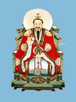
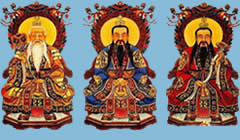
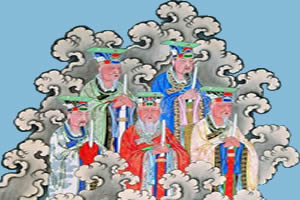
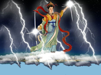
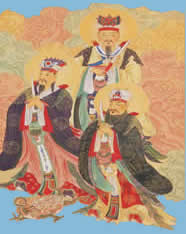
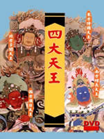
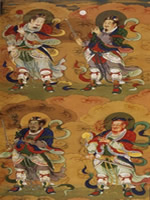

| 自从盘古开天地重要神仙表如下：

古氏又称元始天王一名浮黎元始天尊。
三清: 
元始天尊
灵宝天尊又名太上道君
道德天尊又名太上老君西游記里也称为太上道祖
中央玉皇大帝 妻為：王母娘娘又称为 西王母
北方北极中天紫微大帝
南方南极长生大帝又名玉清真王为元始天王九子。
东方东极青华大帝太乙救苦天尊
西方太极天皇大帝(手下八大元帅五极战神(天空战神大地战神人中战神
北极战神和南极战神)
大地之母承天效法后土皇地祗
五方五老
南方南极观音
东方崇恩圣帝
三岛十洲仙翁东华大帝君（即东王公名金蝉氏号木公）
北方北极玄灵斗姆元君佛教中二十天的摩利支天
中央黄极黄角大仙
中央天仙位表
千里眼 | 顺风耳 | 金童 | 玉女 | 雷公 | 电母（金光圣母）|
风 | 雨师 | 游奕灵官 | 翊圣真君 | 大力鬼王 | 七仙女 | 太白金星 |赤脚大仙 | 广寒仙子（姮娥仙子）嫦娥| 玉兔 | 玉蟾| 吴刚 | 天蓬元帅 |天佑元帅 | 九天玄女 | 十二金>钗 | 九曜星 | 日游神 | 夜游神 | 太阴星君 |太阳星君 | 武德星君 | 佑圣真君
三官大帝：天官 | 地官 | 水官
四大天王
增长天王、持国天王、多闻天王与广目天王
四值功曹
值 年神李丙 | 值月神黄承乙 | 值日神周登 | 值时神刘洪
四大天师
张道陵、许逊字敬之号许旌阳、邱弘济、葛洪
张道陵、许逊（字敬之，号许旌阳）、邱弘济、葛洪
四方神青龙孟章神君、白虎监兵神君、朱雀陵光神君、玄武执明神君。
四渎龙神
黄河 | 长江 | 淮河 | 济水河神 |
孤光自照居漠北，肝胆热血似成冰。白马金羁少年侠，客死虏骑映胆色。
马赵温关四大元帅：
马元帅 又名马天君，又称华光天王、华光大帝
赵元帅 即武财神赵公明，又名赵玄坛
温元帅 温琼，东岳大帝部将关元帅 关羽。
五方谒谛：金光揭谛、银头揭谛、波罗揭谛、波罗僧揭谛、摩诃揭谛
五炁真君： |
东方岁星木德真君 | 南方荧惑火德真君 | 西方太白金德真君 |
北方辰星水 德真君 | 中央镇星土德真君
五岳
东岳泰山天齐仁圣大帝 南岳衡山司天昭圣大帝 中岳嵩山中天崇圣大帝
北岳恒山安天玄圣 大帝 西岳华山金天愿圣大帝
(五岳帝君：东岳帝君，名金虹氏，东华帝君弟。其它四岳帝君为东华帝君的四个儿子。) 及碧霞元君
五 斗星君：
东斗星君 | 西斗星君 | 中斗星君 | 南斗星君 | 北斗星君
六丁六甲：
六丁为阴神玉女 | 丁卯神司马卿 | 丁已神崔巨卿 | 丁未神石叔通 |
丁 酉神臧文公 丁亥神张文通 | 丁丑神赵子玉 |
六甲为阳神玉男 | 甲子神王文卿 | 甲戌神展子江 | 甲申神扈文长 |
甲午神卫玉 卿 | 甲辰神孟非卿 | 甲寅神明文章
南 斗六星君
第一天府宫：司命星君
第二天 相宫：司禄星君
第三天梁宫：延寿星君
第四天同宫：益算星君
第五天枢宫：度厄星君
第六天机宫：上生星君
北斗七星 君：(《狮驼国》中的北天七皇)
北斗第一阳明贪狼星君
北斗第二阴精巨门星君
北斗第三真人禄存星君
北斗第四玄冥文曲星君
北 斗第五丹元廉贞星君
北斗第六北极武曲星君
北斗第七天关破军星君
(《狮驼国》中的北斗七星君为北斗星君的另一个称号：天枢、天璇、 天玑
、天权、玉衡、开阳、摇光。
"天枢、天璇、天玑、天权"合起来又称为"斗魁"或"璇"，后三星组成斗柄，称"杓")
八 仙：
铁拐李、汉钟离、吕洞宾、何仙姑、蓝采和、韩湘子、曹国舅、张果老
增 长天王手下八将：庞刘荀毕、邓辛张陶，其全名为
刘 俊、荀雷吉、庞煜、毕宗远；
邓伯温、辛汉臣、张元伯、陶元信（四目））
九曜 星
金星 | 木星 | 水星 | 火星 | 土星 |罗睺(蚀星) | 计都星 | 紫炁星 | 月孛星罗
十二元辰
子丑寅卯等
二十八星宿
亢金龙、女土蝠、房日兔、心月狐、尾火虎、箕水豹、斗木獬、
牛 金牛、氐土貉、虚日鼠、危月燕、室火猪、壁水獝、奎木狼、
娄金狗、胃土彘、昴日鸡、毕月乌、觜火猴、参水猿、井木犴、
鬼金羊、柳土獐、星 日马、张月鹿、翼火蛇、轸水蚓。
三十六天将
蒋光 | 钟英 | 金游 | 殷郊 | 庞煜 | 刘吉 | 关羽 |
马 胜 | 温琼 | 王善 | 康应 | 朱彦 | 吕魁
方角 | 耿通 | 邓伯温 | 辛汉臣 | 张元伯 | 陶元信 |
荀雷吉 | 毕宗远 | 赵公明 | 吴明远 | 李青天 | 梅天顺 |
熊光显 | 石远信 | 孔雷结 | 陈元远 | 林大华 | 周青远 |
纪 雷刚 | 崔志旭 | 江飞捷 | 贺天祥 | 高克
(三十六天将的版本是最多，以上仅供参考)
地上天仙表
姜子牙（亦为 东华帝君，估计是木公的接班人）
蓬莱三仙：
福 禄寿三星，福神天官大帝，另一说是西汉杨成，又一说中是唐阳城
财神赵公明、（一说比干范蠡为文财神）；
寿星南极仙翁，女寿星：麻姑
真武大帝，又名九天降魔祖师、玄武元帅。
龟蛇二将(又名太玄水精黑灵尊 神、太玄火精赤灵尊神)
小张太子与五大神龙
黎 山老母、镇元子
龙王:东海龙王敖广 | 南海龙王敖钦 | 西海龙王敖闰 | 北海龙王敖顺 | 井海王
孤光自照居漠北，肝胆热血似成冰。白马金羁少年侠，客死虏骑映胆色。
神 霄派诸神
紫微北极大帝
玉清真王（南极 长生大帝）--元始天王第九子
神霄八帝（多为道教虚构），玉清真王与神霄八帝合起来又称为神霄九宸大帝
东极青华大帝、九天应元雷声普化天 尊（黄帝）、九天雷祖大帝等。
（太乙天帝、六天洞渊大帝、六波天主帝君、可韩真君、采访真君）
九司三省与北极四圣
九 司：玉府判府真君、玉府左右待中、玉府左右仆谢、天雷上相、玉枢使相、斗枢上相、上清司命玉府右卿、五雷院使君、雷霆都司元命真君
三省： 雷霆泰省、雷霆玄省、雷霆都省
北极四圣：
天蓬元帅（猪八戒） 手下天罡大圣、九天杀童大将（北斗第八星，又称天杀大神）、
雷 使者等。
天佑（猷）元帅
翊圣元帅
玄武元帅 真武大帝
另有：五方雷王、五方雷霆大帝
阴曹地府
北阴酆都大帝
五方鬼帝：
东方鬼帝蔡郁垒、神荼，治"桃止山" 鬼门关
西 方鬼帝赵文和，王真人，治"嶓冢山"
北方鬼帝张衡、杨云，治罗酆山；
南方鬼帝杜子仁，治罗浮山；
中央鬼帝周乞、稽康，治"抱犊 山"
罗酆六天: (以下为宫名，六天为守宫神)
纣绝阴天宫、泰煞谅事宗天宫、明晨耐犯武城天宫、
恬昭罪气天宫、宗灵七非 天宫、敢司连宛屡天宫
地藏菩萨
十殿阎王:秦广王、楚江王、宋帝王、仵官王、阎罗王、
平等王、泰山王、都市王、卞城王、转 轮王
其这将、臣：
首席判官崔府君、钟魁、黑白无常、牛头马面、孟婆神、
上古神话诸神
混 沌天神--较正式的说法，盘古为开天辟地之始神，但仍有部分传说中，混沌早于盘古而生。
创 世神 天吴、毕方、据比、竖亥、烛阴、女娲
上古四方天帝与辅神：
太 阳神炎帝与火神祝融共同治理天南一万二千里的地方
少昊与水神共工建立天西一万二千里的地方
颛顼与海神禺强(又名冬神玄冥)治理天北一万二千里的
青帝伏羲与九河神 女华胥氏及属神句芒治理天东一万二千里的地方
黄帝时代的诸神
陆吾、英招、离珠、金甲神(此神应是其它神的一种化身)
蚩 尤、风伯雨师、赤松子、力牧、神皇、风后、应龙、魃、夸父、大力神夸娥氏、大庭氏、五龙氏
炎帝，又称为神农氏
炎帝的女儿
女 娃(后化身精卫鸟)
瑶姬，在《狮驼国》中又名婉 华仙子。
还有一个小女儿，其名不可考，(拙著《狮驼国》中为炎天圣母)
少昊母为皇娥、长子春神句芒、次子秋神蓐收
颛顼的 后代
四子：虐鬼、魍魉、送穷鬼、梼杌
后 代：老童、太子长琴、黎、重、彭祖(孙)
帝俊
天上妻子：羲和、常羲
人间妻子(省略)
女丑、羿
鲧 妻:女喜。
尧 又名：放勋， 妻女皇；
舜 姓姚，名重华，妻娥皇，女英；
禹，父鲧，妻"女娇",又名涂山氏，系九尾白狐精
三皇：
指天地人三皇，分别是伏羲、神农与女娲。
五帝：
通常 指 黄帝 | 颛顼 | 帝俊 | 尧 | 舜 |
其它--后天著名仙 真表
房中之祖--彭祖 | 纵横始祖--鬼谷子 | 文始真人--尹喜 | 南华真人--庄子
求仙使者--徐福 | 茅山仙祖--三茅真君 | 万古丹王--魏伯阳 | 太极真人--刘安
诙谐岁星--东方朔 | 太平教主--于吉 | 役使鬼神--费长房 | 竹林狂士--嵇康
水府仙伯--郭璞 | 净明教主--许逊 | 蓬莱（都）水监--陶弘景 | 天师--寇谦之
情仙--裴航 | 扶摇子--陈抟 | 显化真人--张三丰
王重阳与全真七子（长春子丘处机、玉阳子王处一、广宁子郝大通、
清净散人孙不二、长生子刘处玄、 长真子谭处端、丹阳子马钰）
其它--民 间神灵不完全列表
天妃娘娘 | 城隍 | 土地神 | 门神 秦叔宝、尉迟敬德
床神（又分床公床母，前者又称"九天监生明素真君"，后者 又称"九天卫房圣母天君"）
喜神 | 厕神紫姑 | 石敢当 | 小儿神项橐 | 朱天大帝崇帧 | 茶神陆羽 |花神 | 染织二圣梅、葛 | 酒神杜康 | 土工祖师神鲁班 | 纺织神黄道婆 |蚕神马头娘（山海经载为西陵氏，嫘祖） | 狱神皋陶 | 梨园神唐明皇
|
马神 | 青蛙神白玉蟾 ｜ 驱蝗神刘猛（取猛将军之意） | 蛇王施相公（施全） |痘神张帅 | 农神后稷
瘟 神：又称五鬼或五方力士，人间又有称五瘟，其中春瘟张元伯、夏瘟刘元达、秋瘟赵公明、冬瘟钟士贵、总管中瘟史文业。
窑神太上老君 | 贼神时迁 | 穷神 | **神管仲 | 武穆王岳飞 | 周公、桃花女 |欢喜神和合二仙寒山、拾得
纯本书虚构主要仙魔表
太古 猿君 | 魔佛老人 | 千面天妖 | 地心古龙 | 圣手仙王 | 圣手文王 |天罗王（道教中为三清的一种化身）
乾坤大仙 | 颠倒老祖 | 穹天老祖 | 先天老祖 | 无极老祖 | 无为老祖 |霹雳老祖 | 藤祖 | 幻仙子 | 清弥天诸神 | 阴阳法王
毒龙山千毒沼沼底 ---蟒神（有双翼）| 南海深处一千里以下的---海皇(章鱼怪)；兽帝（九蛇头加龟背）(九婴与相柳借天地交合之气所造怪物)
霸王（长白山天 池的箭恐龙） | 天子梼杌（颛顼之子，住在北方玄冰宫）｜不坏林王狻猊(住在南方热带密林中，身坚胜铁，刀枪不入）
平天大圣牛魔王 | 覆海大圣蛟魔王 | 移山大圣狮驼王 | 驱神大圣野象王 |浑天大圣鹏魔王 | 通风大圣弥猴王 | 齐天大圣美猴王
孤光自照居漠北， 肝胆热血似成冰。白马金羁少年侠，客死虏骑映胆色。
西天灵山仙佛表
三世佛：南无过去、现在、未来 注：通常三世佛分横三世佛与竖三世佛。
竖三世佛：
过去佛的燃灯上古佛，加上现在世的释迦佛（原名：悉达多），以及未来世的弥勒佛
横 三世佛：中间是释迦牟尼佛，右有文殊菩萨，左立普贤菩萨；
右边是西方极乐世界的阿弥陀佛，两旁是观世音菩萨和大势至菩萨；
左边为东方净琉 璃世界的药师佛，两旁日光菩萨和月光菩萨。
(因都有如来在，所以本文中就不增加三世佛这个名词.西游原著里，提及了南无过去现在未来佛，本书中称 之为三世佛。)
四大金刚：
五台 山秘魔岩神通广大泼法金刚
峨眉山淸凉洞法力无量胜至金刚
须弥山摩耳崖毗卢沙门大力金刚
昆仑山金雫岭不坏尊王永住金刚
五 方佛:
东方不动（身）佛；南方宝生佛；中央毗卢遮那佛；
西方阿弥陀佛；北方不空成就佛。
八菩萨：
观音菩 萨、普贤菩萨、文殊菩萨、地藏王菩萨、
灵吉菩萨、大势至菩萨、日光菩萨、月光菩萨
十大弟子：
舍利弗智慧第一 | 目犍连神通第一 | 阿难陀多闻第一 | 优波离持戒第一
阿那律天眼第一 | 大迦叶头陀第一 | 富楼那说法第一 | 迦旃延论议第一
罗睺罗密行第一 | 须菩提解空第一
十八罗汉：
托塔罗汉 | 探手罗汉 | 过江罗汉 | 芭蕉罗汉 | 静座罗汉 |
骑象罗汉 | 看门罗汉 | 降龙罗汉 | 举钵罗汉 | 布袋罗汉 |
长眉罗汉 | 开心罗汉 | 喜庆罗汉 | 挖耳罗汉 | 笑狮罗汉 |
伏虎罗汉 | 沉思罗汉 | 骑鹿罗汉 |
十八伽蓝
美音 | 梵音 | 天鼓 | 叹妙 | 叹美 | 摩妙 | 雷音 | 师子 | 妙叹梵响 | 人音 | 佛奴 | 颂德 | 广目 | 妙眼 | 彻听 | 彻视 | 遍视
二十诸 天：
日天（又名日宫天子）| 大梵天 | 多闻天 | 金刚密迹 | 鬼子母神；
月天 (又名月宫天子) | 帝释天 | 持国天 | 大自在天 | 摩利支天；
(大)辩才天 | (大)功德天 | 增长天 | 散脂大将 | 婆竭龙王；
韦驮天(战神塞犍陀) | 坚牢地神 | 广目天 | 菩提树神 | 阎摩罗王。
其它：
金顶大仙、阿傩、伽叶。
婆罗门教诸神
佛 祖摩诃婆罗佛与婆罗三世佛（此四佛全部为虚构、以下人名为与如来有关的仙、人）频婆娑、阿罗蓝、郁陀、提婆达多
主 要大神：大梵天、湿婆楼陀罗、雪山女神杜尔迦、群主婆罗八部（婆罗门天龙八部）－（婆罗八部为虚构，以下诸神为印度创世诸神）
水神伐 楼那 | 土神陀湿多 | 风神伐由 | 日神苏里耶 | 天帝因陀罗道神普善 | 保护神毗湿奴 | 阿修罗：底提耶与檀那婆 | 火神婆由。
回首頁 | 上 一 頁
電子郵件:miduoyuan@gmail.com
|